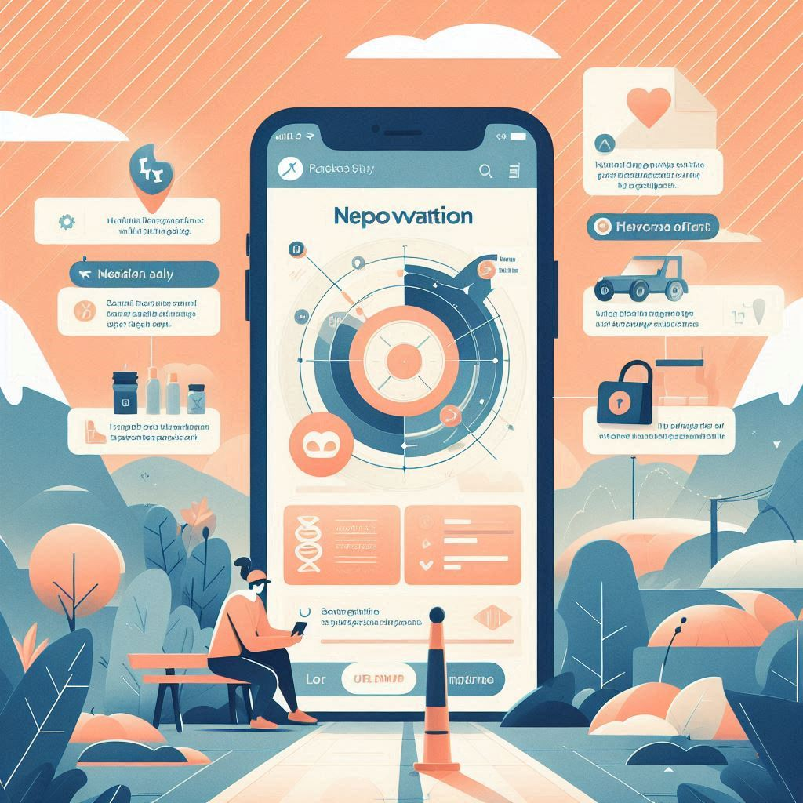

Case Study 2: Improving a Health and Wellness App
Background: A health and wellness app aimed to help users track their fitness goals but received feedback about its complex navigation and lack of personalized content. Users struggled to find relevant features and felt overwhelmed by the interface.
Objective: To simplify navigation and enhance personalization to improve user engagement and retention.
Process:
- Research: Analyzed user feedback, conducted surveys, and performed competitive analysis to understand user needs and preferences. Identified that users wanted easier access to personalized workout plans and progress tracking.
- Design: Redesigned the app’s navigation with a bottom tab bar for easy access to key sections. Introduced personalized recommendations based on user activity and goals. Added a dashboard that provided an overview of progress and upcoming goals.
- Prototyping and Testing: Created interactive prototypes to test new navigation and personalization features. Conducted usability tests with a sample of existing users to gather insights and refine the design.
- Launch and Evaluation: Rolled out the updated app to a subset of users before a full release. Monitored usage metrics and collected feedback to ensure the changes met user expectations.
Results:
- Increased daily active users by 20%.
- Enhanced user engagement with personalized content, leading to a 30% increase in feature usage.
- Received positive feedback regarding the app’s ease of use and personalized experience.